Standard Code Test¶
Standard code tests are dialog driven, where you specify input data and the expected output. Codio then executes the student code, supplies the specified input data, and compares the expected output to the student code’s actual output.
Note
The output (including white space) of all the test cases in your Standard Code test cannot exceed 20,000 characters. If your output will exceed this limit, or you need finer control of the tests, you can create custom code tests. See Advanced Code Tests for more information.
Codio provides a Starter Pack project that contains examples for all assessment types and a guides authoring cheat sheet. Go to Starter Packs and search for Demo Guides and Assessments if not already loaded in your My Projects area. Click Use Pack and then Create to install it to your Codio account.
For more information about adding a Standard Code Test, view this video
Assessment Auto-Generation¶
Assessments can be auto-generated using the text on the current guides page as context. Follow the steps below to auto-generate a Standard Code Test assessment:
Select Standard Code Test from the Assessments list.
Press the Generate button at bottom right corner.
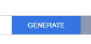
The Generation Prompt will open, press Generate Using AI to preview the generated assessment.
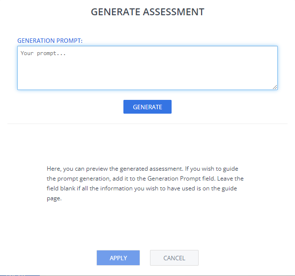
The Standard Code Test assessment generation provides instructions for the student, the test cases, the solution, and an explanation of the solution. The test cases may use standard input or command line arguments, and the expected output is specified.
Codio also creates the code file for the student, with the solution bracketed within solution templates.
The generate assessment feature does not configure the page layout; you should specify the layout depending on how you want to present the information to the students.
If you are not satisfied with the result, select Regenerate to create a new version of the assessment. You can provide additional guidance in the Generation Prompt field. For example, create assessment based on the first paragraph with 2 correct answers.
When you are satisfied with the result, press Apply and then Create.
More information about generating assessments may be found on the AI assessment generation page.
Assessment Manual Creation¶
Follow these steps to set up a standard code test:
On the General page, enter the following information:
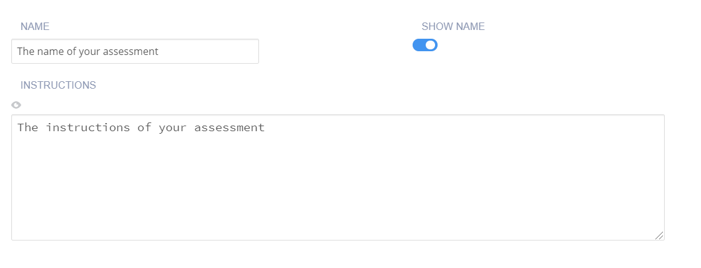
Name - Enter a short name that describes the test. This name is displayed in the teacher dashboard so the name should reflect the challenge and thereby be clear when reviewing.
Toggle the Show Name setting to hide the name in the challenge text the student sees.
Instructions - Enter text that is shown to the student using optional Markdown formatting.
Click Execution in the navigation pane and complete the following information:
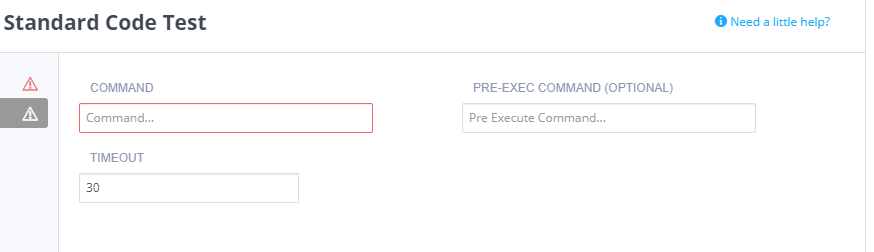
Note
If you store the assessment scripts in the .guides/secure folder, they run securely and students cannot see the script or the files in the folder. The files can be dragged and dropped from the File Tree into the field to automatically populate the necessary execution and run code.
Timeout - Where you can amend the timeout setting for the code to execute. Arrows will allow you to set max 300 (sec), if you require longer, you can manually enter the timeout period.
Command - Enter the command that executes the student code. This is usually a run command. If the Pre-exec command fails, the Command will not run.
Pre-exec command - Enter the command to execute before each test is run. This is usually a compile command.
Java
Compile: javac -cp path/to/file filename.java
Run: java -cp path/to/file filename
Python
Run: python path/to/file/filename.py
C
Compile: gcc filename.c -o filename -lm
Run: ./filename
C++
Compile: g++ -o filename filename.cpp
Run: ./filename
Ruby
Run: ruby filename.rb
Bash
Run: bash full_path.sh
SQL
Codio provides three helper scripts to facilitate running queries on the database your students are modifying. These queries use ODBC to connect to and query the database and it is more strict about spacing than sqlcmd.
Run: (depending on your version of SQL)
python .guides/scripts/helper_mssql.py –db_host localhost –db_user SA –db_pass YourPassword –db_name DBNAME
python .guides/scripts/helper_mysql.py –db_host localhost –db_user root –db_pass YourPassword –db_name DBNAME
python .guides/scripts/helper_postgres.py –db_host localhost –db_port 5432 –db_user postgres –db_pass YourPassword –db_name DBNAME
Note
First you must use Tools > Install Software to install the appropriate helper script for your database (MSSQL,MySql,PostgreSQL). For example, if you are using MSSQL, you would download the Helper MSSql.
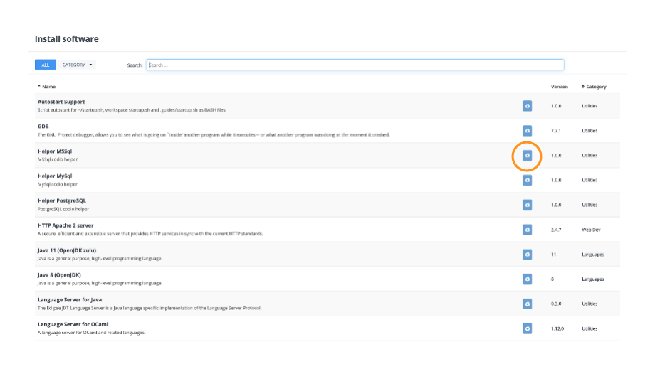
Click Grading in the left navigation pane and complete the following fields:
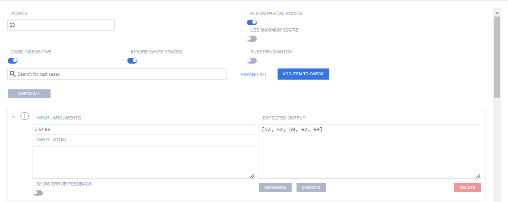
Points - The score given to the student if the code test passes. You can enter any positive numeric value. If this assessment should not be graded, enter 0 points.
Allow Partial Points - Toggle to enable partial points, the grade is then based on the percentage of test cases the code passes. See Allow Partial Points for more information.
Case Insensitive - Toggle to enable a case insensitive output comparison. By default, the comparison is case sensitive.
Ignore White Space - Toggle to enable stripping out any white space characters (carriage return, line feed, tabs, etc.) from both the expected output and the student output.
Substring Match - Toggle to enable substring match when comparing the expected output to the student output. The entire expected output needs to be contiguous in the student output.
Add Item to Check - Click to create another set of input/output fields.
Search - Search the test cases by the number/index assigned to it.
Expand All/Collapse All - Click to expand/collapse all test cases.
Input - Arguments - Enter the command line arguments that are read by the student code.
Use maximum score - Toggle to enable assessment final score to be the highest score attained of all runs.
Delete - Click to delete the test case.
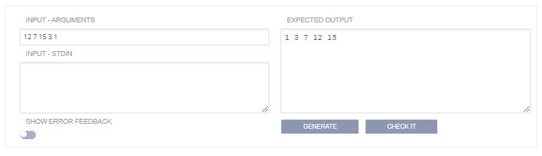
Input - Stdin - Enter data that would be entered manually in the console. For example, Enter your Name:. If using this input method:
The input data should have a new line if it would be expected in the actual program execution.
In the Output field, the prompt text that is displayed to the user appears in
stdoutand should be reflected in your output field but without the data entered by the user. You do not need a new line in the output field between each input prompt as the new line character is part of the user input.Ignore white space and Substring match are recommended options as they make the test more tolerant. The following image shows how to format input and output fields if you are not ignoring white space or doing a Substring match. Note how the input field only supplied the values to be input, not the prompt itself (which is actually a part of stdout). It is important to accurately account for all spaces and carriage returns.
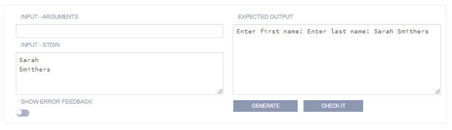
The following image shows the more tolerant approach with the Ignore whitespace option set. In this case everything on its own line for readability. The whitespace characters will be stripped out of both the expected output and the student output at runtime.
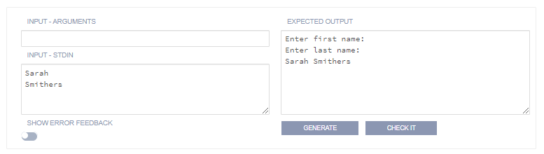
Generate - Click this button to generate the expected output based on the input you provided in the left half of the box. You need to have the solution code in the code file in order for the output to be generated. If there is already some content in the output box then you will get a pop up asking you if you want to overwrite the existing output.
Check - Use this to test whether running the solution code, using the optional input, will result in the value in the expected output box. If the test fails an output box will appear below showing the difference between the current output and the expected output.
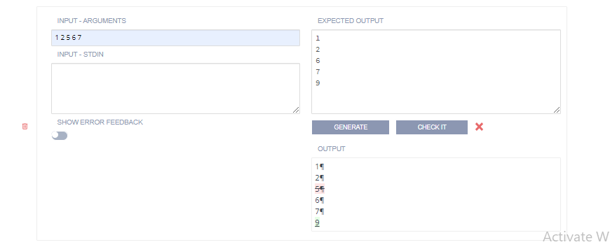
Check All - Press to check all test cases at once so you can see how many of them are passed or failed.
Show Error Feedback - Toggle to enable feedback to students about errors related to the specific test case.
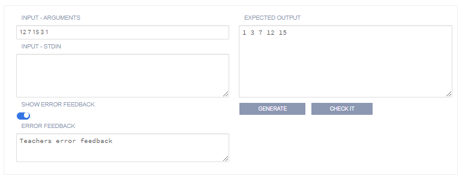
Show Expected Answer - Toggle to show the students the expected output when they have submitted an answer for the question. To suppress expected output, disable the setting.
Define Number of Attempts - enable to allow and set the number of attempts students can make for this assessment. If disabled, the student can make unlimited attempts.
Show Rationale to Students - Toggle to display the answer, and the rationale for the answer, to the student. This guidance information will be shown to students after they have submitted their answer and any time they view the assignment after marking it as completed. You can set when to show this selecting from Never, After x attempts, If score is greater than or equal to a % of the total or Always
Rationale - Enter guidance for the assessment. This is always visible to the teacher when the project is opened in the course or when opening the student’s project.
Click on the Parameters tab if you wish to edit/change Parameterized Assessments (deprecated) using a script. See Parameterized Assessments for more information. New parameterized assessments can no longer be set up.
Click Metadata in the left navigation pane and complete the following fields:

Bloom’s Level - Click the drop-down and choose the level of Bloom’s Taxonomy: https://cft.vanderbilt.edu/guides-sub-pages/blooms-taxonomy/ for the current assessment.
Learning Objectives The objectives are the specific educational goal of the current assessment. Typically, objectives begin with Students Will Be Able To (SWBAT). For example, if an assessment asks the student to predict the output of a recursive code segment, then the Learning Objectives could be SWBAT follow the flow of recursive execution.
Tags - The Content and Programming Language tags are provided and required. To add another tag, click Add Tag and enter the name and values.
Click Files in the left navigation pane and check the check boxes for additional external files to be included with the assessment when adding it to an assessment library. The files are then included in the Additional content list.

Click Create to complete the process.
Output written to a file¶
If the output of a program is written to a file rather than Standard Output (stdout) you can use the Command portion of the execution tab to run a bash command to list out the contents of the file.
For example if the output is written to a file called output.txt, you would put the following into the Command.
cat output.txt
In Linux, the command cat lists out the contents of the file. You can use the Pre-exec command to run the student code in this case.